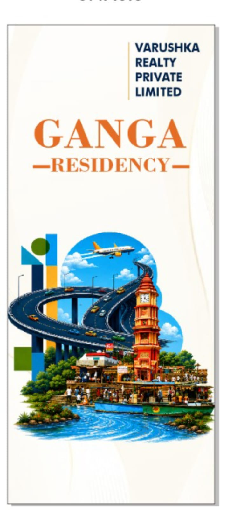

Water Supply, Electricity & Sewage Infrastructure at Ganga Residency: What's Actually Included
When buying residential real estate in emerging corridors like garhmukteshwar, the biggest concern for buyers isn't just the price per square yard—it is whether the township offers real, functional civil infrastructure or merely empty promises on paper. Unapproved agricultural sub-divisions often leave plot owners stranded without water pipelines, power connections, or proper drainage.
At Ganga Residency, located strategically near the Ganga Expressway and NH-9, infrastructure development is fully planned, engineering-led, and integrated directly into the master layout. Whether you are planning to build a custom multi-story duplex or holding land for long-term capital appreciation, here is an exhaustive, transparent look at what utilities are actually included within the township.

Planned Underground Conduit Trenching & Civil Roads

Strategic Expressway Corridor Infrastructure Integration
Guaranteed Freehold & Approved Utilities
Avoid unapproved farmland schemes without basic rights. Review our legal land approvals, RERA compliance status, and master utilities on the Ganga Residency Overview Page or consult our legal verification guide regarding Section 143 land approvals in Western UP.
Table of Contents
- 1. Continuous 24/7 Water Supply Network & Storage
- 2. Underground Electrical Distribution & Transformer Grid
- 3. Sewage Treatment Plant (STP) & Underground Plumbing
- 4. Monsoon Storm Water Management & Concrete Drains
- 5. High-Speed Underground Fiber & Smart Telecom Ready
- 6. Utility Infrastructure Comparison Table
- 7. On-Site Infrastructure Video Tour
- 8. Frequently Asked Questions (FAQs)
1. Continuous 24/7 Water Supply Network & Storage
Water availability is paramount for daily domestic living. Unlike unorganized colonies where homeowners must individually bore shallow wells—risking ground depletion and poor water quality—Ganga Residency features a centralized dual-water delivery architecture:
- Overhead Storage Reservoirs: High-capacity elevated water tanks strategically positioned to guarantee uniform hydraulic pressure across every plot section, regardless of elevation.
- Subterranean Water Distribution: High-density polyethylene (HDPE) non-corrosive pipelines run under paved sidewalk berms, ensuring no road-cutting is ever needed when connecting individual plot lines.
- Deep Aquifer Borewells: Water is harvested from deep, sweet groundwater aquifers surrounding the Ganga basin, filtered through filtration units, and tested regularly for purity.
- Dual Piping Provision: Dedicated plumbing loops designed for potable drinking water and recycled treated water (for park lawn irrigation and landscaping).
To learn more about how township amenities enhance daily lifestyle convenience, read our detailed post on Ganga Residency Amenities and Layout Features.
Underground Power Cables
No overhead wire clutter. Heavy-duty armored cabling laid in concrete ducts prevents storm damage and electrical hazards.
Pressurized Water Loop
Centralized filtration and overhead tank system ensuring continuous water pressure directly to your villa's overhead tank.
Eco-Friendly STP
Integrated Sewage Treatment Plant recycling wastewater for green belt maintenance, eliminating septic tank needs.
2. Underground Electrical Distribution & Transformer Grid
Overhead electric wires look unsightly, create safety hazards during severe monsoons, and lead to frequent distribution trips. Ganga Residency incorporates modern, underground power distribution engineering:
- Underground Armored Cabling: All high-voltage feed lines and low-voltage distribution lines are buried inside heavy-duty PVC conduits with protective concrete casing.
- Feeder Pillars at Plot Boundaries: Each plot owner receives a pre-installed feeder pillar connection box at their boundary line, allowing instant hookup upon construction.
- Substation & Step-Down Transformers: Dedicated step-down transformers installed inside secure, gated electrical enclosures within the township buffer zone prevent power fluctuations and protect household appliances.
- LED Street Lighting Network: Automatic day/night sensor LED street poles installed along 30-foot and 40-foot wide asphalt roads ensure full visibility and safety at night.
Buyers evaluating plot options can review full pricing tiers across different plot dimensions at our Ganga Residency Price List page or check our breakdown on 100 Sq. Yd vs. 150 Sq. Yd Plots.

Wide Tree-Lined Avenues with Underground Ducting

Secured Utility Zones & Gated Entry Corridors
3. Sewage Treatment Plant (STP) & Underground Plumbing
Traditional, unorganized plots rely on individual soak-pits and primitive septic tanks that foul the soil, contaminate groundwater, and emit unpleasant odors. Ganga Residency implements a modern environmental sanitation solution:
- Centralized Sewage Network: Every plot connects into a underground sewer network running along township roads.
- On-Site Sewage Treatment Plant (STP): Organic waste is treated on-site using bio-reactor filtration. Treated effluent water is odor-free and reused entirely for watering township gardens, central parks, and road cleaning.
- Zero Liquid Discharge (ZLD) Vision: Ensures minimal environmental footprint while preserving the pristine ecological ecosystem surrounding the sacred Ganga River zone.
For an in-depth perspective on the spiritual and ecological benefits of living near garhmukteshwar, explore our guide on Living Near Garh Ganga: Daily Life & Community as well as independent coverage on Why garhmukteshwar is NCR's Top Real Estate Hotspot.
4. Monsoon Storm Water Management & Concrete Drains
Waterlogging is one of the most destructive issues facing poorly planned real estate developments in the NCR during rainy seasons. Ganga Residency prevents water stagnation through scientific gradient engineering:
- Covered RCC Box Drains: Reinforced concrete storm drains are constructed along both sides of all internal roads, covered with removable concrete slabs for easy periodic maintenance.
- Road Cross-Camber Alignment: Internal asphalt roads feature a engineered central crown slope, forcing rainwater immediately into side drains rather than letting it pool on driveways.
- Rainwater Harvesting Pits: Multiple percolation wells installed across park areas recharge groundwater reserves during monsoon downpours.
5. High-Speed Underground Fiber & Smart Telecom Ready
With remote work and hybrid business models now standard, connectivity is a mandatory utility. Ganga Residency includes pre-planned underground telecom ducts:
- Fiber-to-the-Home (FTTH) Ready: Dedicated underground PVC conduit pipes are pre-laid to carry high-speed optical fiber cables directly to individual plot lines without disturbing roads later.
- Seamless Mobile Connectivity: Proximity to major highways ensures strong cellular coverage across major telecom providers (Jio, Airtel, Vi).
6. Utility Infrastructure Comparison Table
Here is a side-by-side comparison of utilities at Ganga Residency compared to unapproved regional plots:
| Utility Feature | Unapproved Regional Plots | Ganga Residency Master Township |
|---|---|---|
| Electricity Layout | Overhead messy wires, frequent tripping | 100% Underground armored cabling & feeder pillars |
| Water Supply | Self-funded shallow borewell required | Centralized overhead tank & continuous HDPE supply |
| Sewage System | Individual septic pits (ground contamination) | Underground sewer lines connected to modern STP |
| Storm Drainage | Unlined open mud trenches / waterlogging | Covered RCC concrete box drains with camber slope |
| Internet / Fiber | Overhead loose wires tied to street poles | Pre-laid underground FTTH optical fiber conduits |
| Road Construction | Karcha dirt tracks or thin gravel layers | Heavy-duty asphalt/blacktop roads with curbed edges |
7. On-Site Infrastructure Video Tour
Watch our official site walkthrough video demonstrating the actual on-ground civil construction, wide roads, and peaceful environment at Ganga Residency:

Interested in comparing Ganga Residency with neighboring developments? Read our side-by-side review on Ganga Residency vs. Ganga County Township Comparison or check details on our sister project Ganga County Plots.
8. Frequently Asked Questions (FAQs)
Are there extra hidden costs for electrical meter and water connections?
No, utility connection terms are clearly detailed in your booking documentation. All main underground supply conduits are pre-installed right up to your plot line boundary.
When can I start home construction on my plot?
Ganga Residency offers immediate possession options upon completion of registration formalities. Because road work and utility lines are ready, you can start building your home immediately.
How far is the township from local transport hubs?
Ganga Residency is located with direct highway access to NH-9 and the Ganga Expressway. You can view complete travel timings in our Distance Guide from Garh Ganga Railway Station & Expressway.
What documents should I verify before purchasing a pre-launch or launched plot?
We recommend checking registry status, revenue khatauni, and land approvals. Read our detailed guide on Documents to Check Before Booking a Plot for step-by-step verification.